- 問題ID : 15701 システム時刻の管理
- 履歴
ntpqコマンドの-iオプションについて正しく説明しているのはどれか
正解
対話モードで起動する
解説
ntpd の時刻同期状況は ntpq コマンドで確認できます。ntpq コマンドの書式は以下のとおりです。
ntpq [オプション] [接続先サーバ]
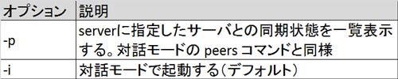
上表より正解は
・対話モードで起動する
です
以下は実行例です。対話モードで起動後、対話コマンド「peers」を実行しています。
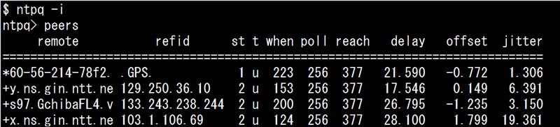
その他の選択肢については、以下の通りです。
・時刻同期の状況を一覧表示する
「-p」オプションについての説明のため、誤りです。
・インターネットからのアクセスを許可する
・入力ファイルを指定する
・ネットワーク接続を有効にする
ntpqコマンドにはそのようなオプションはないため、誤りです。
参考
Linuxの動作するシステムで扱う時刻には、ハードウェアクロックとシステムクロックがあります。
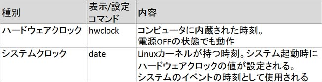
hwclock コマンドの書式と主なオプションは以下の通りです。
hwclock オプション
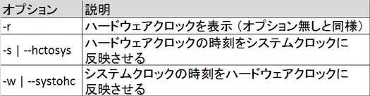
例）ハードウェアクロックを確認する場合
# hwclock -r
Tue 25 Aug 2015 11:30:30 AM JST -0.426310 seconds
date コマンドの書式は以下の通りです。
date [MMDDhhmm[CC[YY]][.ss]]
（MMは月、DDは日、hhは時、mmは分、CCは西暦の上2桁、YYは西暦の下2桁、ssは秒）
何も指定せず、コマンドのみを実行すると現在の日付時刻が表示されます。
また、+に続けて日付時刻のフィールド文字を指定すると、指定した通りの日付時刻書式で表示します。
例）システムクロックを確認する場合
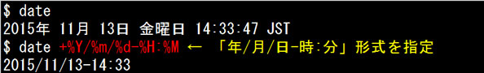
製造上のばらつきや環境要因により、ハードウェアクロックやシステムクロックは運用中に実時刻とのズレが発生します。システムの正確な時刻を維持するにはNTP（Network Time Protocol）による時刻同期機能を利用します。
時 刻同期には「任意のタイミングでNTPサーバから時刻を取得する」方法と「NTPデーモン（ntpd）により自動で時刻を同期する」方法があります。な お、NTPはUDPのポート123番を送受信に使って通信を行いますので、ファイアウォールなどで当該ポートの通信がフィルタリングされている場合、 NTPによる時刻同期はできません。
手動でNTPサーバから正確な時刻を取得し、システムクロックに反映させるには ntpdate コマンドを使用します。ntpdate コマンドはNTPクライアントとしてのツールです。
NTP デーモンはデフォルトでは、NTPサーバから取得した時刻とシステムクロックが1000秒以上ずれている場合に異常終了するようになっています。そのた め、システム起動時には ntpdate コマンドで正確な時刻を取得し、hwclockコマンドでシステムクロックをハードウェアクロックに反映後、ntpd を起動して正確な時刻を維持するのが一般的です。
ntpdate コマンドの書式は以下の通りです。
ntpdate [オプション] NTPサーバ名
以下は実行例です。
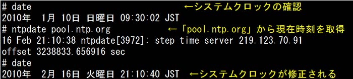
以下は各時刻の表示、設定方法をまとめたものです。
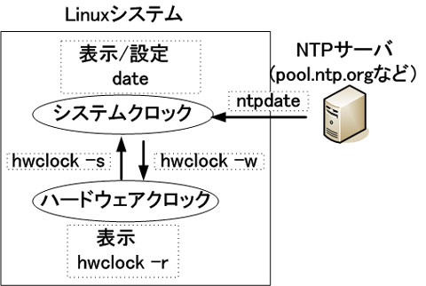
NTPサーバで動作しているNTPデーモン（ntpd）は、指定したNTPサーバに定期的に時刻情報を問い合わせて自身の時刻を修正し、正確なシステムクロックを維持します。
NTP サーバは階層構造を取り、原子時計やGPSなどの正確な時計をstratum（ストレイタム：階層）0とし、そこから直接時刻を取得するサーバが stratum 1、stratum 1のサーバから時刻を取得するサーバは stratum 2、最下層は stratum 16となります。stratum 16のサーバからは時刻を取得することは出来ません。
ntpdの各種設定は「/etc/ntp.conf」で行います。
「/etc/ntp.conf」の主な設定項目は以下のとおりです。
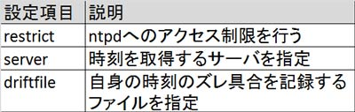
CentOS7でのデフォルト設定（コメントは非表示にしています）：
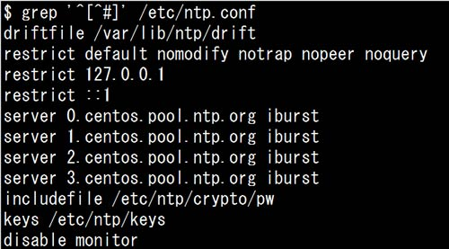
serverにはネットワーク内部に設置したNTPサーバや、世界中にある公開NTPサーバ、プロバイダが提供するNTPサーバを指定します。
公 開NTPサーバを利用する場合は、複数のNTPサーバ群で構成される「pool.ntp.org」プロジェクトに登録されている外部サーバ等を指定しま す。「pool.ntp.org」を利用すると、複数のNTPサーバから、負荷分散の技術の一つである「DNSラウンドロビン」を利用して時刻を取得しま す。例えば日本であれば「0.jp.pool.ntp.org」から「3.jp.pool.ntp.org」といったserverを指定することで、遅延 の少ない、正確な時刻を入手できるようになります。
ntpd の時刻同期状況は ntpq コマンドで確認できます。ntpq コマンドの書式は以下のとおりです。
ntpq オプション 接続先サーバ
実行例：
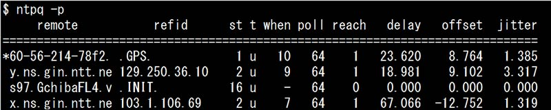
各項目の意味は以下のとおりです。
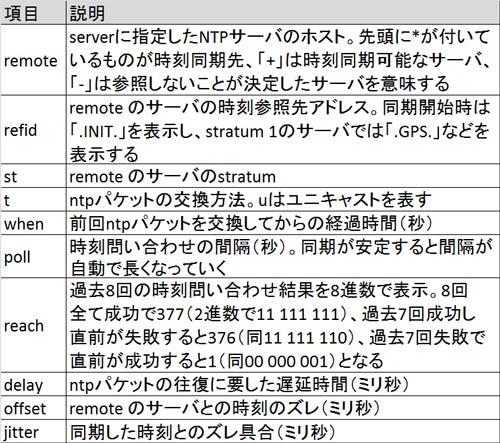
時刻同期が安定してくると、poll 間隔が自動で長くなっていきます。最大1024秒（約17分）ごとに時刻問い合わせを行うようになり、システムへの負荷が少なくなるようになっています。
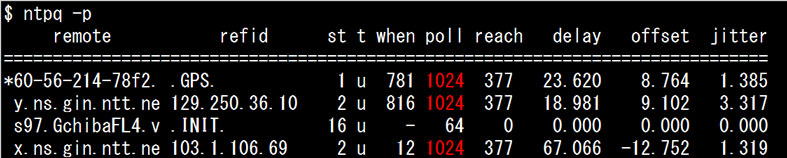